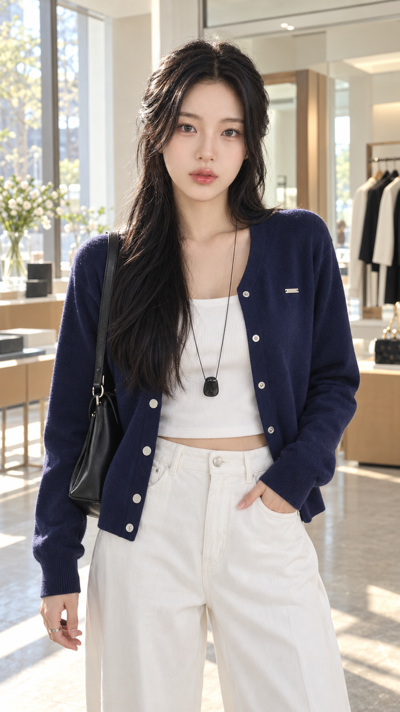
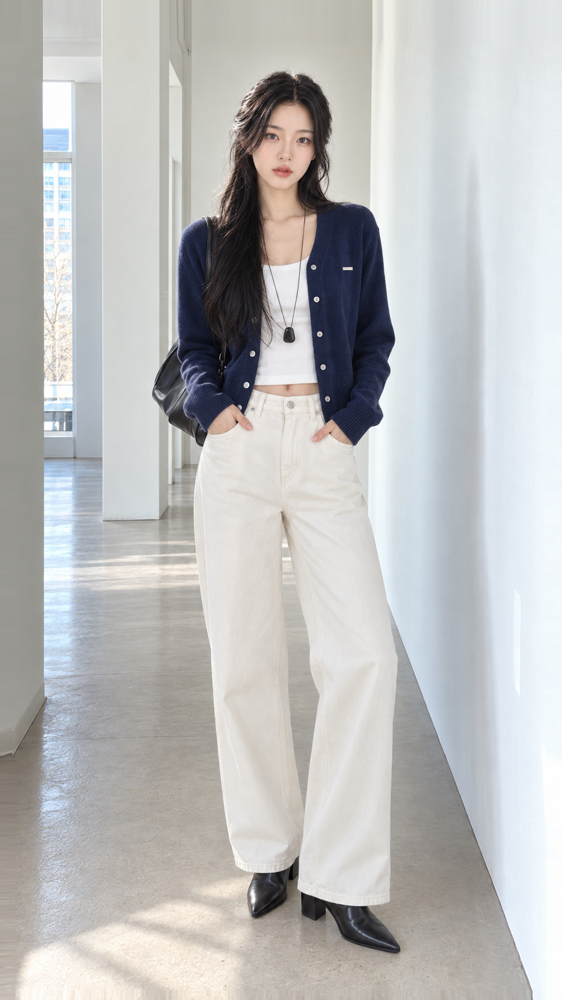
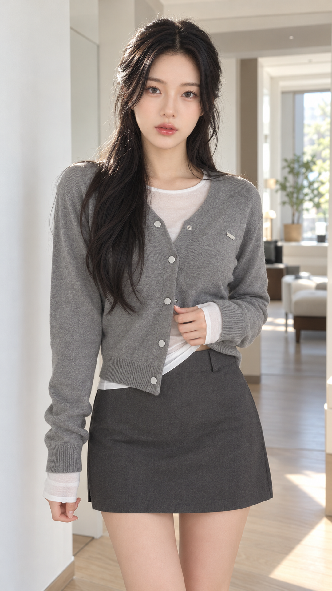
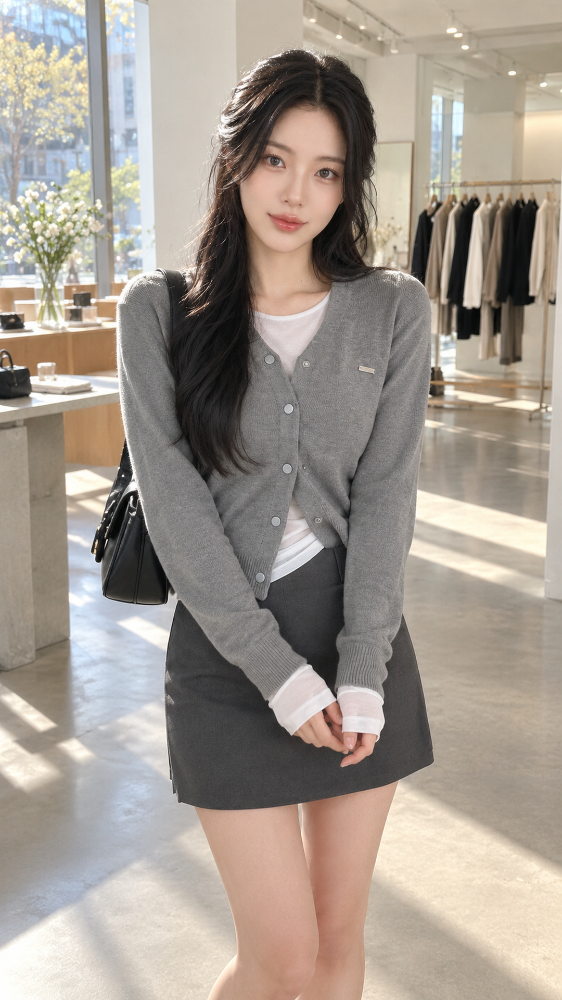
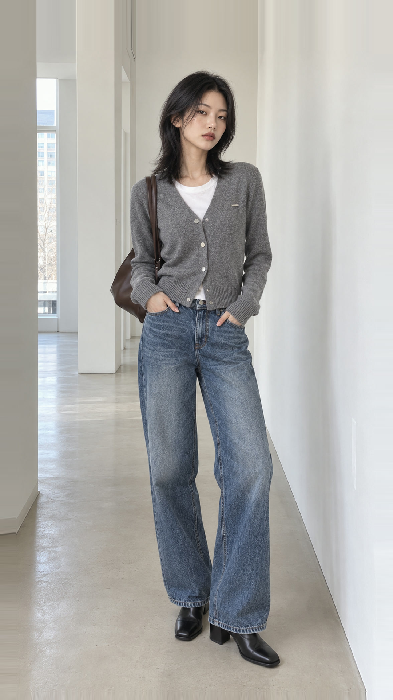
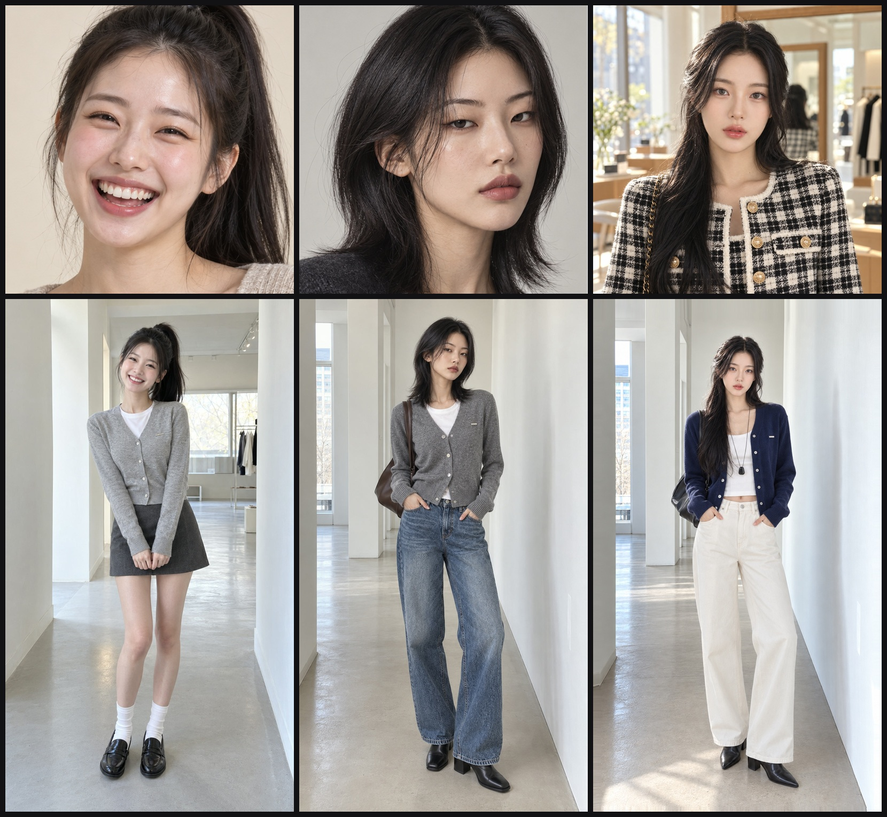

릴스 02 — 오브넬 [3SIZE] 마틴 브이넥 스냅 펜던트 가디건 발주서
• 총 6컷 중 4컷(Cut 1, 2, 4, 5)은 이미 생성 및 1080p 다운로드 완료되었습니다.
• 아래 🔥 미완료 2컷(Cut 3, Cut 6 — 169cm 정본 네이비 가디건)만 Flow에서 생성 후 다운로드해 주시면 즉시 최종 마스터 영상으로 합본됩니다.
🔥 지금 생성 필요한 2컷 (Cut 3 · Cut 6 — 169cm 메인 모델 네이비 가디건)
각 카드의 ⬇️ PNG 키프레임 다운로드 버튼을 눌러 시작 프레임에 넣고, 📋 Flow 프롬프트 복사 버튼을 눌러 붙여넣으신 뒤 생성된 영상을 다운로드해 주세요.


Cut 03. [컬러 스위치] 169cm 메인 모델 — 딥네이비 가디건 + 크림 와이드 팬츠 쇼룸 미디엄샷
그레이 미니 스커트 룩에서 딥네이비 + 크림 와이드 팬츠 오피스/드뮤어 룩으로 컬러가 전환되는 핵심 컷입니다. 정면 아이컨택을 유지하며 실버 펜던트가 빛을 받습니다.


Cut 06. [키·코디 비교 엔딩 3/3] 169cm 메인 모델 — 딥네이비 가디건 + 크림 와이드 팬츠 전신 풀샷
엔딩 3연속 키별 비교(`158cm → 163cm → 169cm`)의 마지막 169cm 롱다리 슬랙스 코디 전신 컷입니다. 다운로드해 주시면 `[가이드 1]` 상단 에디토리얼 키 정보(`169cm · 48kg`)가 자동 합성됩니다.

🎬 릴스 02 전체 6컷 발주서 (완료된 4컷 1080p 영상 미리보기 포함)
Cut 1, 2, 4, 5는 이미 1080p 다운로드까지 완료되어 우측에서 바로 재생해 보실 수 있습니다.

Cut 01. [후킹 클로즈업] 169cm 메인 모델 — 멜란지 그레이 스냅 가디건 정면 아이컨택


Cut 02. [핏 체감 미디엄샷] 169cm 메인 모델 — 그레이 가디건 + 미니스커트 + 숄더백

Cut 03. [컬러 스위치] 169cm 메인 모델 — 딥네이비 가디건 + 크림 와이드 팬츠

Cut 04. [키·코디 비교 엔딩 1/3] 158cm 정본 모델 — 미니스커트 & 로퍼 러블리 코디

Cut 05. [키·코디 비교 엔딩 2/3] 163cm 정본 모델 — 스트레이트 데님 데일리 코디

Cut 06. [키·코디 비교 엔딩 3/3] 169cm 메인 모델 — 딥네이비 가디건 + 크림 와이드 팬츠 전신
👑 확정 정본 3모델 마스터 기준표 (158cm · 163cm · 169cm)
모든 릴스 키프레임 생성 시 verify_model_identity_gate.py가 아래 3명의 정본 얼굴 레퍼런스 및 픽셀 신장 비율(1cm = 10px)을 자동 검증합니다.
